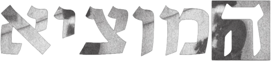

Style guide
Colors
Spacing
Project page — left half
The same spots on every project page, in Figma pixels.
Project page — top area and text column
The new layout (trac.): the same spots on every project page, in Figma pixels.
Text styles
Home page
.handwriting
Cool stuff by
.project-label
trac.
ux\ui
app design
.project-year
2025
Project page
.project-handwriting
More stuff by
.project-name
trac.
.project-header
A songwriting app for independent musicians
.project-title
too many versions
.project-bold-text
student project with mia gaon
.project-text
trac. is an app that keeps your songwriting organized while you keep creating.
.project-footer-item
Project page — new layout (trac.)
.top-link
Contact
.top-label
Student Project
With Mia Gaon
.stack-title
A songwriting app for independent musicians
.stack-big-title
too many versions
.stack-text
trac. is an app that keeps your songwriting organized while you keep creating.
About page
.about-handwriting
Cool stuff by
.about-text
Fun facts
.about-links
.about-big
Short paragraph about me
Process page
.process-title
Process
.entry-title
Week 1
Components
Work card

Navigation
Page header
Short
trac.
uX\uI
app design
2025
A songwriting app
An app for writing songs.
student project
Long
Lets talk about it
web&app design
illustration
branding
2026
A songwriting app for independent musicians who write everywhere
trac. is an app that keeps your songwriting organized while you keep creating. Write lyrics, capture ideas, record drafts, and build your projects without the usual mess in between. Everything stays in one place, from the first idea to the studio.
student project with mia gaon, startup course
Text block
Short
My part
I designed the visual language.
Long
too many versions
too many places
& too easy to lose
I designed this app end-to-end alongside a fellow designer friend. We shared responsibility across the process, from research and small-scale studies to ideation, prototyping, and defining the app’s visual language.
I took lead on key parts of the design process, in development of the visual language, designing the landing page, and building the final full-flow prototype.
Stacking texts (end of the scroll)
Short
I designed this app.
too easy to lose
A songwriting app
An app for writing songs.
Long
I designed this app end-to-end alongside a fellow designer. We shared responsibility across the process, from research and small-scale studies to ideation, prototyping, and defining the app’s visual language.
too many versions
too many places
& too easy to lose
Our Solution:
Write lyrics, capture ideas, record drafts and build your projects without the usual mess in between.
When creating music, short or quick materials are created along the way. Musicians often keep these materials across many platforms.
A songwriting app for independent musicians
trac. is an app that keeps your songwriting organized while you keep creating.
Video player buttons
Special mice
Each box shows the mouse picture at its real size. Move the mouse over it to try it.
.cursor-trac

.cursor-hamotzi

.cursor-lets-talk
.cursor-about

Stamps
.about-stamp — every click leaves a copy of the about mouse. It stays 3.5 seconds, then fades out over 2 seconds.
Click anywhere in this box